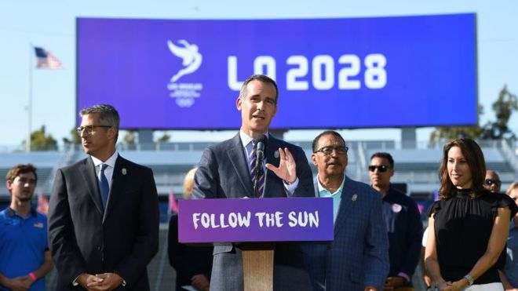
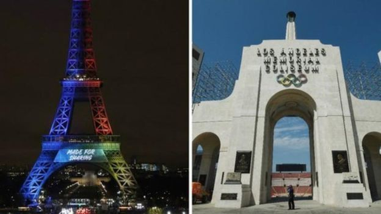
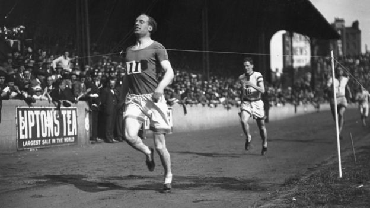
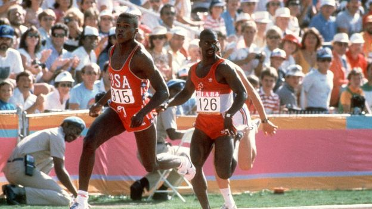

奥运主办权：洛杉矶同意主办2028年奥运会
文章来源:http://www.bbc.com/zhongwen/simp/world-40783575
发稿日期:2017/8/1

洛杉矶市长加塞蒂表示，IOC的提案难以拒绝 (GETTY IMAGES)
美国洛杉矶正式宣布将申请主办2028年夏季奥运会，意味着2024年奥运主办权将留给巴黎。
6月，国际奥委会（IOC）投票决定2024和2028年连续两届奥运会的主办权——而巴黎与洛杉矶是仅有的两个申办城市，但尚未清楚哪座城市将主办哪一届。
两个城市都曾经希望主办2024年奥运会。
国际奥委会对洛杉矶的决定表示欢迎，并提出向组委会支出18亿美元（14亿英镑）资助。
了解商讨进程的消息人士向BBC透露说，洛杉矶接受的理由是，主办2028年奥运会的经济效益要比先在2024年主办奥运会更高。
这笔资金将包括延长筹备计划时间的费用，以及在奥运会到来前资助青年体育项目。

巴黎曾在申办2012年奥运会上败给伦敦，现在和洛杉矶“搭伙”分别主办2024和2028年奥运会。 (GOOGLE)
洛杉矶申办委员会主席凯西·瓦瑟曼（Casey Wasserman）较早前曾表示，两座城市现在是“团结一致”准备好为奥运会和残奥会服务。
与此同时，洛杉矶市长埃里克·加塞蒂（Eric Garcetti）表示，将在2028年“将奥运会带回来”，并指奥委会的提议好到难以拒绝。
洛杉矶此前曾两次主办奥林匹克运动会，分别在1932和1984年。
巴黎市长安妮·伊达尔戈（Anne Hidalgo）说：“巴黎和洛杉矶是两座令人惊叹的国际城市，团结一致支持奥林匹克精神，我们现在站在一起，帮助奥运会在2024和2028年取得成功。”
“正如今天宣布的消息显示的，IOC和两座城市之间的对话进展很好。我们有信心在利马的IOC会议之前，能够最终确定一个‘三赢’的协议。”
IOC希望洛杉矶和巴黎在9月的会议之前达成协议，假如不能达成，就要就2024年奥运主办权进行投票。
国际奥委会主席托马斯·巴赫（Thomas Bach）欢迎洛杉矶的决定，形容这个申办决定“有力而充满热诚”。
六月，瓦瑟曼似乎就在给巴黎递话。他说："我们从来就没只想过2024年的奥运会。"
但后来他们的发言人马上对BBC说："洛杉矶也是主办2024年奥运的理想城市，我们并没有在这个问题上让步。"
巴黎强调他们必须率先主办，因为准备划建奥运村的地皮在2024年后就不能再用于重建。
洛杉矶力争要办一次低成本的奥运会，他们辩称奥运用得着的设施都是现成的，而巴黎则需要狠花一大笔钱搭建多个造价昂贵的场馆。

英国奥运选手利德尔曾在1924年巴黎奥运期间拒绝在周日参加比赛。

美国选手卡尔·刘易斯（左）与加拿大选手本·约翰逊是1984年洛杉矶奥运会男子百米的主角 (GETTY IMAGES)
布达佩斯、汉堡和罗马宣布退出后，两届奥运会的申办城市就剩下洛杉矶和巴黎。
BBC体育记者亚历克斯·卡普斯迪克（Alex Capstick）分析指，其实这算是巴黎赢了这个回合。巴黎如果主办2024年奥运会的话，相当于玩了一回“百年重现”。
1924年的5月到7月间，巴黎曾主办了第八届夏季奥林匹克运动会。
而洛杉矶似乎更看重赚不赚钱。这座城市和奥委会算账后得出结论，国际奥委会提出的资助令洛城愿意等到2028年。
至于退出奥运申办的波士顿、汉堡、罗马和布达佩斯来说，他们最“肝儿颤”的不仅是主办奥运会要花超多钱，而且还不得人心。
对于国际奥委会来说，头等大事就是必须想法子吸引全球的各个城市动办奥运的念头。
不过事情发展到这地步，国际奥委会也只能走着看。